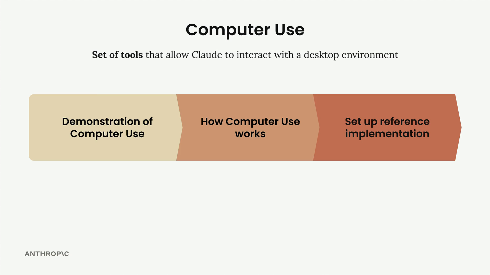
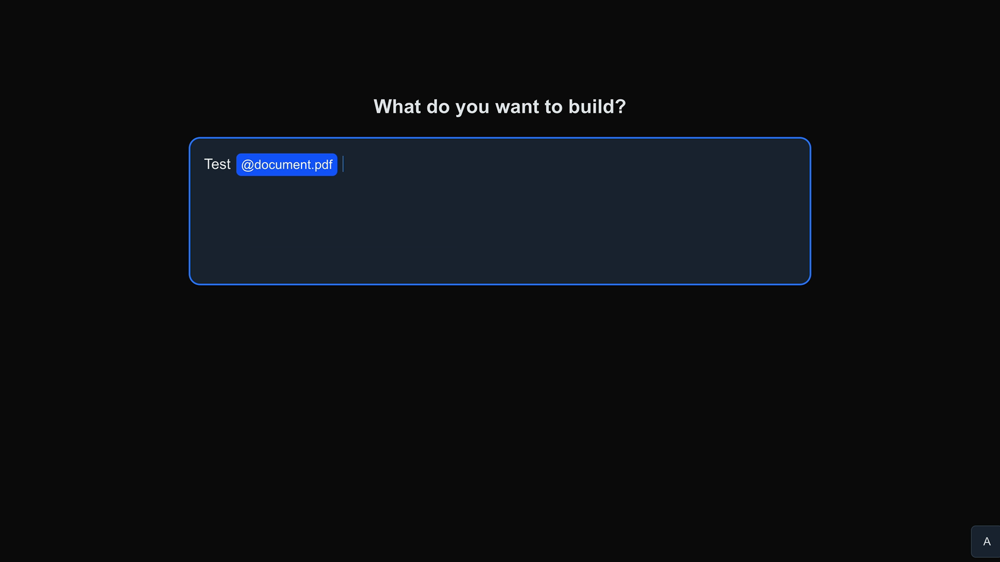

Claude with Amazon Bedrock
เนื้อหาเทียบเท่าคอร์ส Building with the Claude API แต่เรียก Claude ผ่าน Amazon Bedrock — บวกหัวข้อพิเศษด้าน RAG, Computer Use และ Claude Code
ℹ️
โครงสร้างเหมือนคอร์ส API เนื้อหาหลัก (API basics, prompt engineering/eval, tool use, RAG, features, MCP, agents) เหมือนกับ Building with the Claude API เพียงเปลี่ยน endpoint เป็น Bedrock — ด้านล่างเน้น เฉพาะหัวข้อที่ต่าง/เพิ่มเข้ามา
🔎 RAG ที่แม่นขึ้น: Reranking + Contextual retrieval
🔝
Reranking results
หลัง hybrid retrieval ผลที่ได้อาจเรียงไม่ดีเมื่อค้นด้วย term เฉพาะหรือตัวย่อ — reranking จัดอันดับใหม่ให้ผลที่ตรงที่สุดขึ้นมาก่อน
🧩
Contextual retrieval
แก้ปัญหา chunk ที่เสีย context — ให้ Claude เติม context ใส่แต่ละ chunk ก่อนเก็บ ทำให้ค้นเจอแม่นขึ้น
🖥️ Computer Use
Claude สามารถ ควบคุม UI/หน้าจอ ได้ — ทำงานคล้าย tool use แต่ส่งเป็นคำขอ "ควบคุม computer interface" (เช่น คลิก พิมพ์ เลื่อนเมาส์) แทนการเรียกฟังก์ชันธรรมดา


🤖 Agents และ Claude Code บน Bedrock
- Agents overview + Claude Code: ใช้ Claude Code ผ่าน Bedrock ได้ (เช่น
/initสร้างCLAUDE.md) - Parallelizing Claude Code: รัน Claude Code หลาย instance พร้อมกัน แต่ละตัวทำคนละงาน เพิ่ม productivity
- Automated debugging: ให้ Claude monitor production app แล้วแก้ error อัตโนมัติก่อนกระทบผู้ใช้
- Qualities of agents: รูปแบบที่ทำให้ agent สำเร็จ — focused tool usage, environmental awareness และ iterative execution
🎯 สรุปใจความสำคัญ
- เนื้อหาหลักเหมือนคอร์ส API แต่เรียก Claude ผ่าน Amazon Bedrock
- RAG เพิ่ม Reranking (จัดอันดับผลใหม่) และ Contextual retrieval (เติม context ในแต่ละ chunk)
- Computer Use ให้ Claude ควบคุม UI/หน้าจอ ทำงานคล้าย tool use
- ใช้ Claude Code บน Bedrock ได้ + Parallelizing และ Automated debugging
- agent ที่ดี = focused tool usage + environmental awareness + iterative execution